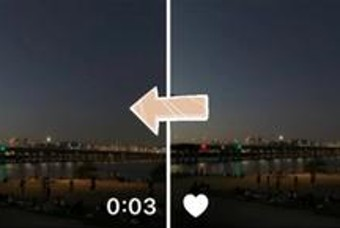
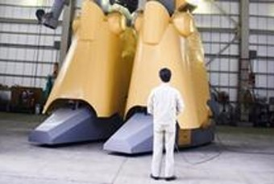

뉴스스탠드
언론사 구독 설정에서 관심있는 언론사를 구독하시면
언론사가 직접 편집한 뉴스들을 네이버 홈에서 바로 보실 수 있습니다.
주제별 캐스트
-
테크
3점식 안전벨트의 숨겨진 이야기(ft. 박지윤 최동석 볼보 사고)
‘우리가 타는 모든 차량에 닐스 볼린의 업적이 있다.’2008년 볼보 북미지역 사장이 오늘날의 3점식 안전벨트를 처음 발명한 닐스 볼린의 업적을 기리면서 한 말입니다. 얼마 전 박지윤 아나운서 일가족이 역주행해오던 2.5톤 트럭과의 정면충돌하는 사건이 있었습니다. 하지만 일가족 모두 경상에 그치는 기적이 일어났고 많은 사람들이 박지윤 아나운서가 탄
1주일 전 민들레 -
슬기로운 가전생활
에어프라이어가 있다면 하나쯤! '발상 에프팟 프로'
최근 에어프라이어가 집안의 필수 소형가전으로 자리 잡으면서 같이 쓰면 편리한 조리도구를 추천받았다. 대표적 조리 도구가 에어프라이어 전용 실리콘 용기 그릇, ‘발상 에프팟 프로’다. 실리콘 재질로 에어프라이어 안에서도 안전하고 편리하게 사용하면서 설거지도 손쉬운 제품이다. 실리콘은 규소와 산소의 합성물로 이미 조리도구에 다양하게 쓰이고 있다. 제조 방법에
4일 전 테크플러스 -
테크
체온측정 카메라, 스마트폰, 종이사진 갖다 대도 '36.5도 정상체온'으로 표시
스마트폰·종이사진 갖다 대면 사람으로 인식, 체온체크까지 다중이용시설 방역 허점 드러나 품질검증 미흡해 대책마련 시급코로나19 감염 확산을 방지하기 위해 시중에 설치된 '안면인식 체온측정 카메라'가 사진을 정상 체온으로 인식하는 등 허점을 드러냈다. 호텔, 쇼핑센터 등 다중이용시설에 설치된 다수의 제품에서 이 같은 문제가 드러남에 따라 코로나1
2일 전 전자신문 -
HOT
"통닭, 이젠 사 먹지 말자" 오븐 에어프라이어 사용기
주방에서 사용하는 소형 가전제품 중에 가장 유용한 제품을 꼽으라면 주저 않고 '에어프라이어'를 꼽는다. 벌써 두 번째 제조사와 모델을 바꿔 가며 새로 사기도 했고, 주변에도 결혼이나 이사, 집들이 선물로 추천하는 제품이 에어프라이어다. 만두, 돈가스, 동그랑땡, 감자튀김과 같은 간단한 냉동식품 조리부터 삼겹살, 목살, 스테이크, 생선 같은 구이류 조리에.
5일 전 테크플러스
-
스마트 플레이스
바이러스가 준 선물? 두마리 토끼 잡는 ‘거점오피스’
코로나 막고 업무효율 ‘쑥쑥’…현장 살펴보니이미 많이 바뀌었지만 변화는 계속될 것이다. 코로나19가 일상을 전복하면서 생활, 문화, 경제에 대격변이 일어나고 있다. 초점은 비대면에 맞춰진다. 사람들이 거리를 두기 시작하면서 산업 전반에 로봇 도입이 가속화되고 있으며, 갈 수 없는 현장을 그대로 옮기는 연결의 기법도 빠르게
2주일 전 www cnbnews com -
슬기로운 가전생활
나의 첫 전기면도기 브라운 9280CC 사용기
안녕하세요 포스트 에디터 흥사마입니다. 남자라면 뗄야 뗄 수 없는 게 바로 면도기죠? 바쁜 아침에 말끔히 준비하고 외출을 하려는데 깜빡하고 면도를 안 했다면? 아차차!! 아무리 바빠도 면도는 꼭 해야 해요! 면도를 하지 않으면 바로 티가 나기 때문에 혹여 라도 지저분한 남자로 오해 받을 수 있거든요. 오늘은 브라운 전기면도기를 보여드릴까 하는데요, 바로
3일 전 흥사마 -
HOT
PS5, Xbox X 공습에도 닌텐도 살아남을까
올해 콘솔 게임 시장에서 가장 큰 관심을 끈 제품을 꼽자면 단연 닌텐도 스위치가 아닐까 싶다. 신제품도 아니지만 코로나19 특수를 타고 세계적으로 부족 현상까지 겪었다. 공급은 점차 늘어나고 있지만 인기는 여전히 이어지고 있어 게임 업계에서 닌텐도의 저력이 재조명되는 분위기다. 시장에서는 올해 연말 최신 콘솔기기 플레이스테이션 5(PS5)와 엑스박스 X(X
5일 전 테크플러스 -
테크 두 개의 화면에 회전까지… LG 윙, 9월 24일 출시 예상
사용자 경험 차별화… 폼팩터 혁신 6.8인치 메인-4인치 보조화면 장착 아이폰 12 출시 등 감안 일정 앞당겨LG전자가 하반기 전략 스마트폰 'LG 윙'(코드명)을 9월 24일 출시한다. 가격대는 100만원선 안팎으로 예상된다. 두 개 화면을 이용, 차별화된 사용자 경험으로 폼팩터 혁신에 새로운 방향성을 제시할 것으로 전망된다.
3일 전 전자신문
-
테크
역대 가장 싼 구글폰 등장... 가성비로 승부한다
구글이 스마트폰 신제품 '픽셀 4a'를 출시했다. 화려한 스펙은 없었지만 역대 픽셀폰 중 가장 싼 가격으로 중저가폰 시장 경쟁에서 밀리지 않겠다는 의지를 드러낸 것으로 보인다. 픽셀 4a의 가장 큰 강점은 가격이다. 플래그십 모델의 카메라 품질 등을 유지하고 있지만 부가적인 기능을 빼 판매 가격을 낮췄다. 역대 최저가다. 신제품은 128GB 저장용량 기
4일 전 테크플러스 -
스마트 플레이스
도로 위, 놀라온 스마트시티의 움직임
스마트 시티란 이름 그대로 똑똑한 도시를 말해요 스마트 시티는 시민들의 삶의 질 향상을 위해 도시의 다양한 문제를 첨단 정보통신 기술을 활용해 해결해요. 특히 시민들의 이동 환경 개선을 위한 교통 분야가 주목받고 있어요!1. 수요응답형 버스 "I-MOD" 수요응답형 대중교통은 인터넷과 스마트폰을 통해 실시간 노선 설정이 가능해요. I-MO
4일 전 LX한국국토정보공사 -
클라우드 게임진
X클라우드의 터치 컨트롤 지원, 단순한 지원을 넘어서는 이유
작년 말 체험 서비스에 들어간 마이크로소프트(이하 MS)의 클라우드 게임 서비스 '프로젝트 X클라우드'(이하 X클라우드)에 처음으로 터치 컨트롤이 지원된다. 첫 타이틀은 닌자 씨어리가 2017년 선보인 <헬블레이드: 세누아의 희생>. X클라우드에서 터치 컨트롤은 올해 초 잠시 등장한 바 있다. 당시에는 콘솔 스트리밍에
4일 전 디스이즈게임 -
HOT
팬데믹 중 '롤드컵' 강행... 상하이는 왜?
세계적인 온라인 게임 '리그 오브 레전드(LoL)'의 프로 대회 '리그 오브 레전드 월드 챔피언십(롤드컵)'이 개최된다. 코로나 바이러스 감염증 19(코로나 19)의 글로벌 확산세가 지속되는 가운데, 중국 상하이에서 열기로 확정했다. 라이엇게임즈는 코로나 19 방역에 만전을 기할 것이라고 밝혔지만, 우려는 여전하다. 롤드컵 흥행 여부에 이목이 집중된다...
5일 전 테크플러스 -
테크
中 최대 부동산 재벌 헝다, 전기차 모델 6종 공개
중국 최대 부동산 재벌로 불리는 에버그란데(헝다 그룹)가 전기차 모델 6종을 공개했다. 중국 3대 부호로 꼽히는 헝다 그룹 창업자인 쉬자인 회장은 3일(현지시간) '헝치(Hengchi)'라는 브랜드로 세단, 스포츠유틸리티차량(SUV), 7인승 밴 등 6가지 신에너지차(NEV)를 발표했다. 개별 이름 대신 헝치1~헝치6까지 숫자로 번호를 매겼다. 구체적 모
3일 전 테크플러스
-
스마트 모빌리티
테슬라 따라잡기? 폭스바겐 ID.3 3천만원대 순수 전기차 등장!
테슬라 따라잡기? 폭스바겐 ID.3 3천만원대 순수 전기차 등장! 폭스바겐은 지난 20일 브랜드 최초의 순수 전기차 ID.3 판매를 본격 개시하고 올해 10월부터 고객 인도에 나선다고 밝혔습니다. 폭스바겐 ID.3 모델은 동급 대비 우수한 성능과 합리적인 가격을 내세워 차세대 모빌리티 시장의 새로운 주역으로서 출시 전부터 많은 관심을 받았습니다. 새롭게 출
1주일 전 크르릉 -
테플 X MF
숙명여대 - 따뜻할지도(地圖)
정보기술(IT)로 더 따뜻한 세상을 만들 수 없을까요?코로나19는 우리 사회의 불평등한 민낯을 여실히 보여주었습니다. 바이러스는 사회적 약자에게 더욱 치명적이었습니다. 다시 ‘더불어 사는 세상’에 대해 고민하게 했습니다.그래서 테크플러스는 KT 대학생 서포터즈 ‘모바일 퓨처리스트(MF)’를 대상으로 ‘따뜻한 IT’ 프로젝트 아이디어 공모전을 진행했습니다.
2주일 전 테크플러스 -
출발 SF 여행
한국 최초 장편 SF소설 '완전사회'를 읽고
인간 사회의 영원한 꿈. 전쟁 없고 배고픔 없고 두려움 없는 사회. 따스한 사랑과 즐거움이 그득한 사회, 이른바 완전사회를 바라는 건 한낱 허황된 꿈일까.나는 된다고 본다.완전사회라는 독특한 제목과 언젠가는 그렇게 되리라 보며 시작하는 소설 '완전사회'. 이 소설은 1967년에 세상에 나왔으며 작가의 출생연도는 1916년, 즉 일제강점기와 한국전쟁을 겪은
5개월 전 이야기 하시계 -
스마트 모빌리티
쌍용 첫 전기차 ‘E100’, 부활의 ‘전기충격기’ 될까
[기업언박싱] ‘활력징후(Vital Sign)’ 위기 속 전기차 승부수●국내 첫 준중형 SUV 전기차로 6년 만에 ‘기지개’ ●14분기 연속 적자 속 전기차 개발 ●7000억 원 ‘제로섬 게임’ 전기차 시장 겨냥 ●‘영광의 30만 대’ 티볼리와 닮은 꼴 ●&
1주일 전 신동아 -
테크
우리가 매일 쓰는 마스크의 모든 것
코로나 19 바이러스가 장기화되면서 마스크의 중요성에 관한 연구들이 쏟아지고 있습니다. 이제는 매일같이 마스크를 써야하는 시대가 되었습니다. 마스크의 착용은 불편하고 귀찮습니다. 그렇지만 마스크에 관한 과학적 사실들을 알고있다면, 조금은 더 마스크를 우호적인 시선으로 볼 수 있지 않을까요? 본 영상과 포스트는 가장 최근에 진행된 연구들을 바탕으로, 마스크에
6일 전 위니버스
-
테크
아마존이 ‘늑대 탈을 쓴 늑대’라고 불리는 이유
/사진= wikimedia, amazon, Play Impossible, Nucleus, Ubi, August, Vivint
3일 전 티타임즈 -
출발 SF 여행
문윤성 SF 문학상 제정, 대상에 3000만원
2021 문윤성 SF 문학상 제정...“한국 SF 시대 이끌 작가 발굴”국내 최초 장편 SF 소설을 쓴 고(故) 문윤성 작가를 기리고 한국 SF 시대를 열어갈 SF 전문 문학상이 제정된다. 전자신문과 과학소설(SF) 전문 출판사 아작, 인터넷 서점 알라딘, 문윤성기념사업회는 ‘2021 문윤성 SF 문학상(2021 Moon Yun-sung Science F
3일 전 테크플러스 -
에디터 초이스
모기에 물리면 왜 간지러울까?
모기에 물리면 왜 간지러울까? 올해도 어김없이 찾아왔습니다 작년에 왔던 각설이가~ 죽지도 않고 또 왔네 아니고요 여름 출석률 100% 모기!! 살충제를 뿌리고 향을 피워도 나 밖에 몰라~ㅠ 나만 따라다녀 한번 물리고 나면 가만히 둬도 간질간질 긁으면 미치게 간질간질 흡혈귀 물러가라!! 십자빵(?)을 새겨도 침을 발라도 소용없다!! 모기에 물리
1주일 전 과학덕후 YTNscience -
소프트웨어야 놀자
"SW사고력 공부로 제 꿈을 키워요", SW사고력 올림피아드 수상자 인터뷰
국내 유일 소프트웨어(SW) 사고력을 겨루는 SW사고력올림피아드(SWTO)가 올해 4년째를 맞았습니다. 지난 6회 대회까지 초·중학생 4000여명이 참가했는데요. 10%에 해당되는 400여명이 수상의 영광을 누렸습니다. 수상 학생들은 어떠한 준비를 했을까? 그 학생은 어떤 꿈을 꾸고 있을까요?국내 유일 소프트웨어(SW) 사고력을 겨루는 SW사고력올림피아드
3일 전 드림업SW -
테크
美·中 화성 탐사선, 이것이 다르네!
올해 7~8월은 지구와 달, 화성이 일렬로 늘어선다. 이때 화성과 지구의 거리가 아주 가까워진다. 가장 멀리 있을 때가 4억km에 달하며, 지금은 5500만km인 것. 거리가 가까워지면서 탐사 비용과 시간을 줄일 수 있는 시기라 미국, 아랍에미리트(UAE), 중국은 모두 탐사선을 화성으로 보냈다. UAE는 우주에 띄워 화성을 감시하는 궤도선을, 미국과 중
2일 전 테크플러스
-
에디터 초이스
내 개인정보 안전할까? 논란의 앱 몇 가지
스마트폰 없는 세상은 상상할 수 없다. 검색부터 은행 업무, 간단한 업무 처리 등 PC에서 하던 많은 것들을 스마트폰에서 할 수 있다. 예전에는(라떼는) 급하게 처리하는 일 때문에 PC 앞으로 달려가야 했는데 참 편리해졌다. 편리한 스마트폰이지만 뒤따르는 문제도 여럿 있다. 그중 가장 민감한 것이 바로 개인정보. 항상 들고 다니면서 다양한 정보를 기록하다
4일 전 dconomy -
키워드 핫이슈
넷플릭스 독주, 왜 KT 탓으로 돌리나
IT/과학 주간 핫 이슈분석기간: 2020.7.28~ 8.4지난달 28일부터 이달 4일까지 한 주간 IT/과학 분야는 비교적 다양한 주제가 등장했다. 미국과 중국이 동영상 앱인 ‘틱톡’을 놓고 갈등을 빚고 있다는 소식이 가장 많이 보도됐으며, 삼성전자가 중국의 노트북 공장을 폐쇄했다는 보도와 코로나19 확산을 막기 위한 사회적 거리두기로 게임 산업이
2일 전 비플라이소프트 -
굿메이커스
아두이노로 만들어보는 '책상 청소 로봇'
이전에 아두이놀르 이용해서 책상로봇청소기를 만들어보았습니다. 전체적인 형태를 팔각형 형태로 만들어보았는데, 이번엔 원형으로 만들어보고 싶어서 다시 만들게 되었습니다.(사실 저번에 만든건 흡입성능이 아쉬운것도 있었습니다) 이번엔 좀더 작은사이즈로 만들어보았습니다. 첫번째 건전지 케이스를 고정시켜줍니다 흡입모터의 필요없는 앞주둥이(?)를 제거하고 자리를 배..
1주일 전 Faust -
에디터 초이스 AI가 헬스케어에 혁명을 가져온다···4가지 기여 방법
지난 2016년 가천대 길병원에 우리나라 최초로 IBM의 왓슨 온톨로지를 이용한 인공지능(AI)이 도입돼 암 진단 및 치료에 사용되면서 큰 관심을 끌었다. (온톨로지란 사람들이 세상에 대하여 보고 듣고 느끼고 생각하는 것에 대해 합의에 이른 것을 컴퓨터에서 다룰 수 있는 형태로 표현한 모델을 말한다.) 이후 많은 병원이 앞다퉈 이를 도입했지만 어느 새 AI
3일 전 지포스트 -
사과농장 꿀팁
이런 오류 어쩌죠? 직접 경험한 맥북 우여곡절 해결 사례
맥북은 가격에 비해 양심없는 오류들이 자잘하게 많은데 (물론 큰 오류도 많음ㅋㅋ) 공익을 위해 공유해본다 더 좋은 해결법이 있으면 댓글로 알려주시길모델명 : 2019 맥북 프로 13인치 터치바 1. 맥북 터치바 안먹힘 (멈춤)볼륨키가 안먹어서 매번 닫았다 다시 열었는데Fn키를 한번 누르면 다시 제대로 작동된다어쨌거나 임시방편이고 제발 오류 좀
1주일 전 김잣
-
스케일업 라운지
스웨덴 청년이 한국에서 창업한 이유
홍콩 스웨덴 이중국적, 한국에서 플랫폼 스타트업 창업볼보, 에릭슨 등과 함께 주한스웨덴상의 이사로 활약스웨덴 국민행주 ‘웨텍스’ 시작으로 양국 가교 역할서울 강남이나 경기도 판교에 가면 우리나라에서 스타트업을 창업한 외국인을 종종 볼 수 있습니다. 우리나라 청년을 위한 일자리를 만들고 납세 의무도 지면서 대한민국 경제의 정당한 일원으로 살아가고 있는데요.
1주일 전 디캠프 -
테크
'달 골드러시'...달에서도 자원전쟁 발발할까?
달에는 천연자원이 풍부하다. 만약 우리가 달에 가서 그것들을 채굴할 수 있다면? 지난 수세기에 걸친 달 탐사 덕분에 달에 거대한 천연자원이 묻혀 있을 수 있다는 사실을 알게 됐다. 이에 따라, 달의 남극에는 얼음 형태의 물이 풍부하며, 이러한 사실은 달 기지나 식민지를 건설에 아주 중요하다. 스피커, 스마트폰, 배터리, 카메라 렌즈 등에 사용되는 네오디뮴(
3일 전 BBC사이언스 -
굿메이커스
도어락 3D 프린터와 아두이노로 직접 만들었다
홍콩에 새로 이사온 집에는 도어락이 없다. 도어락이 없는 집에 사는것은 여간 불편한 것이 아니다. 일을하러 갈때나 잠시 마트를 갈때마저도 항상 열쇠를 가지고 나서야 하고 집 문을 열때 가방에서 열쇠를 뒤적거려 찾아서 여는 것은 상당히 귀찮은 일이다. 그래서 도어락을 설치해서 열쇠로부터 해방되고자 고민을 하기 시작했다.사실 저렴한 도어락을 구매해서 설치하는
3주일 전 홍콩턱돌이 -
테플 X MF
서강대 - 감정노동자를 위해 기술이 나서다
정보기술(IT)로 더 따뜻한 세상을 만들 수 없을까요?코로나19는 우리 사회의 불평등한 민낯을 여실히 보여주었습니다. 바이러스는 사회적 약자에게 더욱 치명적이었습니다. 다시 ‘더불어 사는 세상’에 대해 고민하게 했습니다.그래서 테크플러스는 KT 대학생 서포터즈 ‘모바일 퓨처리스트(MF)’를 대상으로 ‘따뜻한 IT’ 프로젝트 아이디어 공모전을 진행했습니다.
2주일 전 테크플러스 -
테플 X MF
건국대 - 기술로 마음을 그리다
정보기술(IT)로 더 따뜻한 세상을 만들 수 없을까요?코로나19는 우리 사회의 불평등한 민낯을 여실히 보여주었습니다. 바이러스는 사회적 약자에게 더욱 치명적이었습니다. 다시 ‘더불어 사는 세상’에 대해 고민하게 했습니다.그래서 테크플러스는 KT 대학생 서포터즈 ‘모바일 퓨처리스트(MF)’를 대상으로 ‘따뜻한 IT’ 프로젝트 아이디어 공모전을 진행했습니다.
2주일 전 테크플러스
-
테플 X MF
동덕여대 - 쌍방향 소통 기부플랫폼 '나눔업!'
정보기술(IT)로 더 따뜻한 세상을 만들 수 없을까요?코로나19는 우리 사회의 불평등한 민낯을 여실히 보여주었습니다. 바이러스는 사회적 약자에게 더욱 치명적이었습니다. 다시 ‘더불어 사는 세상’에 대해 고민하게 했습니다.그래서 테크플러스는 KT 대학생 서포터즈 ‘모바일 퓨처리스트(MF)’를 대상으로 ‘따뜻한 IT’ 프로젝트 아이디어 공모전을 진행했습니다.
2주일 전 테크플러스 -
소프트웨어야 놀자
[비대면 데이터 교육 체험기] 데이터 수집·스크러빙·분석 배우기
[우리는 데이터 홍수 속에 살고 있다고 합니다. 인터넷 포털부터 소셜네트워크서비스(SNS)까지 데이터는 넘쳐 나고 있습니다. 그런데 우리는 이 넘쳐나는 데이터를 어떻게 활용할지, 어떤 데이터는 보관하고, 어떤 데이터를 버려야 할지 알기가 쉽지 않습니다. 데이터는 넘쳐 나지만, 활용에 어려움을 겪는 이유죠. 그래서 본 에디터가 직접 6주간 데이터 분석 교육을
3일 전 드림업SW -
디바이스 탐구생활
새로운 아이맥 27인치 출시! 인텔 CPU 탑재한 iMac의 소소한 듯 알찬 구성 살펴보기
아이폰 12와 함께 애플 신제품 발표를 기다리는 과정에서 갑작스러운 '아이맥 27형' 출시 발표 소식을 접하게 되었다. 새로운 아이맥 27인치 모델은 분명히 'NEW' 마크가 찍힌 현재 구매 불가한 국내 미출시 최신형 아이맥이 맞지만... 기존 아이맥과 완벽하게 닮은 디자인 때문인지 '사고 싶다'는 생각에서는 조금 멀게 느껴지는 것도 사실이다.필자는 현재
3일 전 세아향 -
디바이스 탐구생활
애플 맥북 ARM 등장 예고에 갤럭시북S 스냅드래곤이 주목 받는다?
지난 6월 말 개최된 WWDC에서 애플은 연말 출시될 Mac(맥)부터 자체 설계한 ‘ARM’ 칩셋을 탑재할 것을 공식화했습니다. 업계는 애플이 15년간 꾸준히 사용해 오던 인텔 칩셋 대신 ARM 칩셋 탑재를 선언한 배경을 두고 ‘전력 효율성’ 문제에 따른 것이라고 진단합니다. 애플은 차세대 맥에서 저전력 환경에 특화된 미세공정 CPU와 저전력 메모리 L
5일 전 미유 -
테크
이 가격에 이 성능 진심? 플라이코 플로팅 전기면도기
전기면도기를 잘 사용하지 않는다. 아침에 눈을 뜨고 씻을 때 예리한 면도날로 수염을 깎는데, 정신을 집중하면서 하루를 시작한다는 일종의 의식을 치른다. 하지만 그만큼 시간이 소요되는 건 어쩔 수 없다. 가끔 늦게 일어나면 면도하는 시간도 아까울 때가 있다. 시간 절약과 편리함에 전기면도기에 눈을 돌리곤 한다.그러던 중 가성비 '갑'의 전기면도기를 만났..
1개월 전 테크플러스
-
스케일업 라운지
소셜벤처와 사회적기업의 차이점?
안녕하세요~! 오늘도카드뉴스로 찾아온 온라인법인설립시스템 입니다!.소셜벤처기업! 한번쯤은 들어보셨죠? 그리고 사회적기업! 또한한번쯤은 들어보셨을거예요~ 기업이면 기업이지소셜벤처는 뭐고 ~ 사회적기업은 뭐야? 하실 수 있는데요~이 궁금증도 같이한번 알아보도록 합시다!
1주일 전 창업진흥원 -

사과농장 꿀팁
라이브포토 다른폰과 공유? 동영상으로 저장하면 OK
안녕하세욥 오늘 들고 온 포스팅은⭐️아이폰 라이브포토 —> 동영상으로 저장하는 법 !⭐️끝나지 않는 사진 정리ㅠㅠ정리를 하다보니라이브로 찍은 사진이 꽤 많은데,해당 기기가 아닌 다른 곳에 올리거나 저장하게되면 일반 사진으로 저장되고ㅠㅠㅠ이 라이브 포토의 느낌 그대로 올리고 싶어이 방법 저 방법 다 해보던 중 !!!용량은 조금 추가 될 수 있지만그 느낌
1개월 전 동그리그리 -
테크
머스크 이어 베조스도, 우주로 수천 개 위성 쏜다
일론 머스크에 이어 제프 베조스의 아마존도 우주로 수천 개의 인공위성을 쏜다. 미국 언론에 따르면, 최근 미연방통신위원회(FCC)는 수 천 개의 인터넷 전송 위성을 지구 저궤도에 발사하는 아마존의 '프로젝트 카이퍼(Project Kuiper)'에 대해 조건부 승인했다.FCC 승인으로 아마존은 총 3236개의 위성을 하늘로 쏘아 올릴 수 있게 됐다. FC
3일 전 테크플러스 -
테크
우리 집에 가장 알맞는 제습기 고르는 꿀팁
여름철이 되면 무더위만 우리를 괴롭히는 게 아니다. 장마로 인한 폭우도 우리를 힘들게 한다. 비로 인한 침수피해뿐만 아니라 습도가 높아지면서 불쾌지수가 치솟고 세균과 곰팡이 때문에 집안이 더러워지기 십상이기 때문이다. 이럴 때 필요한 가전기기가 하나 있으니 바로 제습기다. 특히 올해는 장마가 일찍 찾아오면서 습기 잡는 제습기를 구매하는 이들이 날로 늘고 있
3일 전 smartPC사랑 -

알쓸같IT
어디서 한 덩치 하는 로봇들만 모았다
알아두면 쓸데 있을 것 같은 IT 지식, 줄여서 '알쓸같IT'. 알쓸같IT에서는 기업, 인물, 기술에 관해 여러분이 몰랐거나 궁금해할 만한 사실들을 발굴해서 소개합니다.거대한 몸집을 지닌 로봇을 눈앞에서 맞닥뜨리면 누구나 압도당하게 된다. 이런저런 로봇 다 봐서 이젠 시시하다고 느끼는 사람이 있다면 오늘 소개하는 로봇을 만나보자.기네스북 등재된 현존...
5일 전 테크플러스
-
특집
부족한게 뭐니? 갤럭시Z 폴드2 톰브라운도 공개! 그리고 BTS 지원 사격
최고의 기대작 삼성 갤럭시 Z 폴드2가 발표가 되었습니다. 앞에 갤럭시노트20, 갤럭시탭S7, 갤럭시버즈라이브, 갤럭시워치3는 사실 그렇게 만족스러운 제품들은 아니었는데 갤럭시Z 폴드2는 진심 너무나 매력적인 모습으로 등장했습니다. 삼성도 이것을 잘 알기에 모든 승부수를 갤럭시Z 폴드2에 건 느낌입니다. 갤럭시Z 폴드2 톰브라운 에디션까지 예고하며 게임 체
2일 전 리더유 -
마음 홀리는 IT
“00번 운전자, 정신 차립니다! 똑바로 안합니까!”
졸음운전은 상당히 위험하다. 운전자 뿐만 아니라, 동승자, 그리고 주변 운전자와 보행자까지 모두 위험에 빠뜨리기 때문이다.음주운전보다 졸음운전이 그나마 나은 게 하나 있다면, 잠에서 깨면 위험상황에서 즉시 벗어날 기회가 주어진다는 거다. 단, 너무 늦지 않아야 한다.일본 크라우드펀딩 사이트 마쿠아케에서는 너무 늦지 않은 시점에 운전자의 졸음을 감지하고
1주일 전 테크플러스 -
알쓸같IT
기술과 만나 탄생한 신개념 스포츠
알아두면 쓸데 있을 것 같은 IT 지식, 줄여서 '알쓸같IT'. 알쓸같IT에서는 기업, 인물, 기술에 관해 여러분이 몰랐거나 궁금해할 만한 사실들을 발굴해서 소개합니다.스포츠의 종류는 방대하다. 축구나 야구와 같이 대중적으로 큰 사랑을 받는 스포츠 말고도 다양하다. 새로운 스포츠가 생겨나기도 한다. 경쟁을 통해 성과를 얻고 재미도 느끼는 활동이라면 무..
1주일 전 테크플러스 -
특집
갤럭시 버즈 라이브 전격 공개! 노캔 탑재 가격 및 특징은?
삼성이 노이즈 캔슬링을 탑재 한 첫 번째 "무선이어폰"을 공개했습니다. 갤럭시 언팩을 통해 공개된 "갤럭시 버즈 라이브"는 갤럭시 최초의 오픈형 무선 이어폰이기도 하죠. 오픈형임에도 액티브 노이즈 캔슬링 기능을 구현했는데 지금까지 출시된 대부분의 노이즈 캔슬링 탑재 이어폰은 대부분 인이어 타입으로 디자인되었기 때문에 착용
2일 전 둥2딸KI -
특허 in 테크
아이폰과 아이패드 연결 후 사용? 관련 애플 특허 알아보니
사람의 아이디어는 다양하지만 그 가운데 구체적인 실용성이 있는 경우 특허로 신청이 될 수 있습니다. 특히 애플과 같은 IT 기업의 경우 기술적인 여러 가지 문제들을 어느 정도 해결하기 때문입니다최근 나온 내용을 보면 아이패드 2 때 또는 아이폰과 연결 후 함께 사용할 수 있는 방법이 고개가 되고 있는데 이렇습니다. 개요2020년 7월 28일 공개된 내용으로
1주일 전 싱글싱글life
-
특허 in 테크
중국 샤오아이, 음성비서 시리 특허침해로 애플 제소
샤오아이(Xiao-i)로 알려진 중국 AI기업 상하이 즈전 네트워크 테크놀로지가 애플에 14억 3천만 달러 특허침해 소송을 제기했다. 애플의 인공지능 음성비서 시리(Siri)가 자사의 특허 기술을 침해했다는 이유에서다. 손해배상은 물론 특허를 위반한 것으로 의심되는 거의 모든 애플 하드웨어의 생산, 판매, 사용 중단을 요구했다. 최근 미국과 중국의 갈등
4일 전 테크플러스 -
마음 홀리는 IT
공기청정기, HEPA 필터가 더 해롭다?
최근 뉴스에서는 수돗물에서 유충이 발견됐다는 소식이 심심치 않게 보도되고 있다. 원인으로 지목된 건 수돗물에 붉은 수돗물을 해결하겠다며 설치한 활성탄 여과지. 하필이면, 이 여과지에서 깔다구 등의 벌레들이 알을 낳으면서 거대한 산란 못이 되어버린 것이다. 이게 그렇게나 안락했던 걸까? 벌레들의 선택이 얼마나 합리적이었는지는 알 수 없지만, 집까지 흘러들어
1주일 전 테크플러스 -
로봇, 인공지능
AI 트랜스포메이션의 주역, AI 컨설턴트
자타 공인 인공지능 전문 기업 마인즈랩! 마인즈랩에서는 마인즈랩이 다루는 인공지능의 종류만큼이나 다양한 역량과 배경을 가진 구성원들이 함께 어우러져 일하고 있습니다. 그중에서 인공지능과 밀접하게 관련되어 있으면서도 다른 회사에서는 찾기 힘든 특별한 직군이 있다고 하는데요.바로 인공지능 컨설턴트(AI Consultant) 직군입니다. 일반적인
5일 전 마인즈랩 -
로봇, 인공지능
콘티넨탈, 엔비디아 슈퍼컴퓨터로 자동차 AI 시스템 훈련
개발 시간 획기적 단축...자율주행 개발 가속화기술기업 콘티넨탈은 엔비디아(NVIDIA)와 협력해 구축한 인공지능(AI) 슈퍼컴퓨터를 통해 자동차의 첨단 운전자 지원 시스템(ADAS) 및 자율주행 시스템 개발 속도를 높이고 있다고 밝혔다.콘티넨탈은 올해초부터 독일 프랑크푸르트 암마인에 위치한 데이터센터에서 엔비디아
1주일 전 디지털투데이 DT -
테크
원하는 대로 만드는 Wifi~ 링크시스 공유기 설치기
인터넷 없이는 못 사는 세상이다. 네트워크로 연결해야 하는 기기도 정말 많아졌다. 하물며 집에 있는 전구까지 인터넷으로 접속해 켜고 끄는 시대에 살고 있다. 우리는 이런 새 기기를 하나씩 들일 때마다 반드시 해야 하는 것이 있다. 본인이 쓰고 있는 무선 인터넷 환경에 연결하는 것이다. 가장 대표적인 것이 와이파이다. 유선으로 연결되는 인터넷을 무선으로 연
4일 전 테크플러스
-
테크
코로나 블루 원인은 어쩌면 전자기기의 파란빛?
파란빛, 받는 시점에 따라 다른 효과 밤이 되면 파란빛 정보에 예민해지고 낮의 파란빛은 우울감 줄여줘※동아사이언스 [강석기의 과학카페] 전문을 싣습니다 신종코로나바이러스감염증(COVID-19·코로나19) 사태가 장기화되면서 심리적으로 힘들어하는 사람들도 늘고 있다고 한다. 이런 상태를 나타내는 '코로나 블루(corona b
4일 전 동아사이언스 -
테크
뷰티 인 테크, 공포의 주사바늘 이제 변신을 꾀할 때
주사를 생각한다면 아이들은 물론 성인까지도 두려움이 생기곤 합니다. 주사기 바늘의 뾰족함에 실제로 맞기도 전에 공포감이 몰려오곤 하는데 생각보다 오랜 역사와 함께와 함께 이어진 주사의 공포 언제쯤 사라질 기술이 나오게 될까요?뷰티 속 테크, 공포의 주사바늘 이제는 변신의 시대주사기는 1853년 프랑스의 C.G.프라바즈에 의하여 최초로 고안되었다고 합니다.
5일 전 시아시아 -
테크
무선 이어폰, 스마트폰에 보관한다?
샤오미가 독특한 스마트폰을 공개했다. 네덜란드 IT매체 렛츠고디지털에 따르면, 샤오미는 세계지식재산권기구(WIPO)에 새로운 특허를 출원했다. 공개된 특허 자료에서 가장 눈에 띄는 건 바로 이어폰이다. 스마트폰 특허인데 무슨 이어폰?이란 의문점이 들 테다. 샤오미는 스마트폰 본체에 무선 이어폰을 내장하는 특허를 출시했다. 삼성 갤럭시 노트에 S펜이 수납된
3일 전 테크플러스 -
HOT
아이폰12 늦어진다! 놀라운 실적 발표로 알게 된 것들
애플 신제품 아이폰 12의 판매가 전망뿐 아니라 실제로도 늦어질 것으로 드러났다. 루카 마에스트리 애플 CFO가 직접 아이폰 12가 예년보다 수주 늦게 공급될 것이라고 말한 것이다. 애플은 30일(현지시간) 지난 2분기(애플 회계연도 2020년 3분기) 실적을 공개하고 콘퍼런스 콜을 진행했다. 이 과정에서 소문으로만 돌던 애플 차기 주요 신제품인 아이폰 1
1주일 전 테크플러스 -
테크
‘거미줄 소프트 로봇’ 개발··거미의 먹이잡기 행동 모사
금속이나 세라믹 등 다양한 크기와 소재의 주변 물체 감지부드러운 소재의 소프트 로봇은 높은 자유도와 적응성을 바탕으로 기존 단단한 소재의 로봇을 이용하기 어려운 분야에서 활약할 수 있다. 때문에 최근 소프트 로봇의 구성요소들에 대한 개별적인 연구가 활발하지만, 각각의 구성요소를 하나의 로봇 시스템으로 통합하기 위한 연구는 아직 미비한 상황이다. 그런데 최근
2주일 전 기계신문
테크 판의 컨텐츠는 ㈜테크플러스에 의해 운영·편집 됩니다.